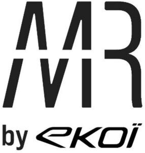

Trade Mark Journal No.2025/020 16 May 2025
WO0000001852217 (9,18,25)
Office of origin: France
Date of International Registration:28 February 2025
Date of designation in the UK:
28 February 2025

Acronym "MR" in stylized form, placed above the terms "by ekoï"; ekoï also depicted in stylized characters
International priority date claimed: 25 October 2024
(France)
(5093212)
- Class 9
- Sunglasses for cycling; sports goggles for cycling; anti-glare visors for cycling; ties for holding spectacles; protective helmets for cyclists; reflective safety bands to be worn on the body for cyclists; downloadable virtual goods, namely, computer programs featuring clothing, underwear, footwear, helmets, spectacles, bags and other accessories for cycling for use online and in online virtual worlds.
- Class 18
- Bags for cycling; backpacks comprising a water pouch for cycling; water-bottle bags and belts for cycling.
- Class 25
- Footwear for sports; sports shoe covers; sportswear; shorts, stockings, tights; gloves; capris and cycling shorts; tee-shirts; jerseys; leotards; tank tops; sweatshirts; jackets; fleece garments; wind-resistant jackets; tracksuits; track suits; cuffs (clothing); sports bras; stocking caps; caps; visors (headwear); underwear; socks; headbands (clothing); all these goods intended for cycling.
J C R
Representative: Madame JACQUELINE Sophie CABINET VITTOZ, 104 rue de Richelieu, F-75002 PARIS, FRANCE